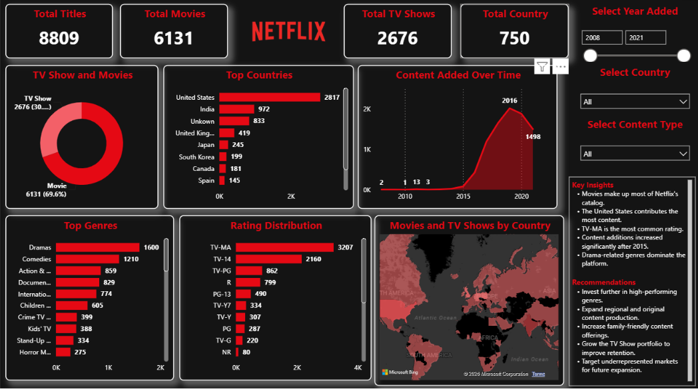

HELLO, I'M
SANIKA
RAUL
ASPIRING DATA ANALYST
Transforming raw data into actionable insights through Power BI, SQL, Excel and Business Analytics. Passionate about uncovering trends, creating interactive dashboards and helping businesses make smarter decisions through data.


